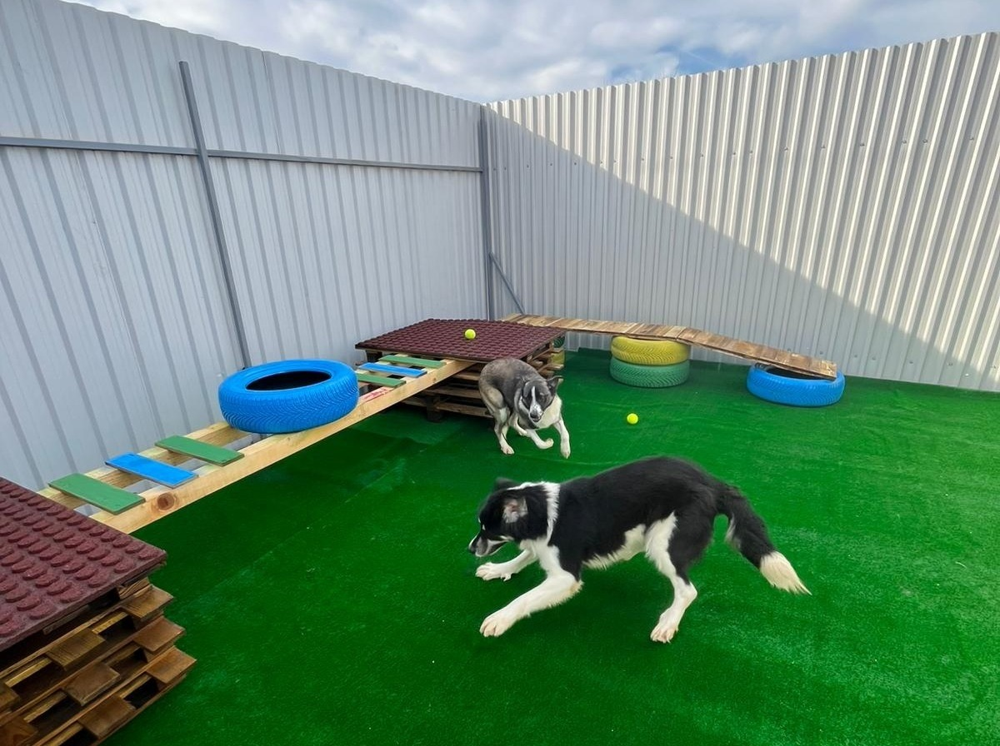
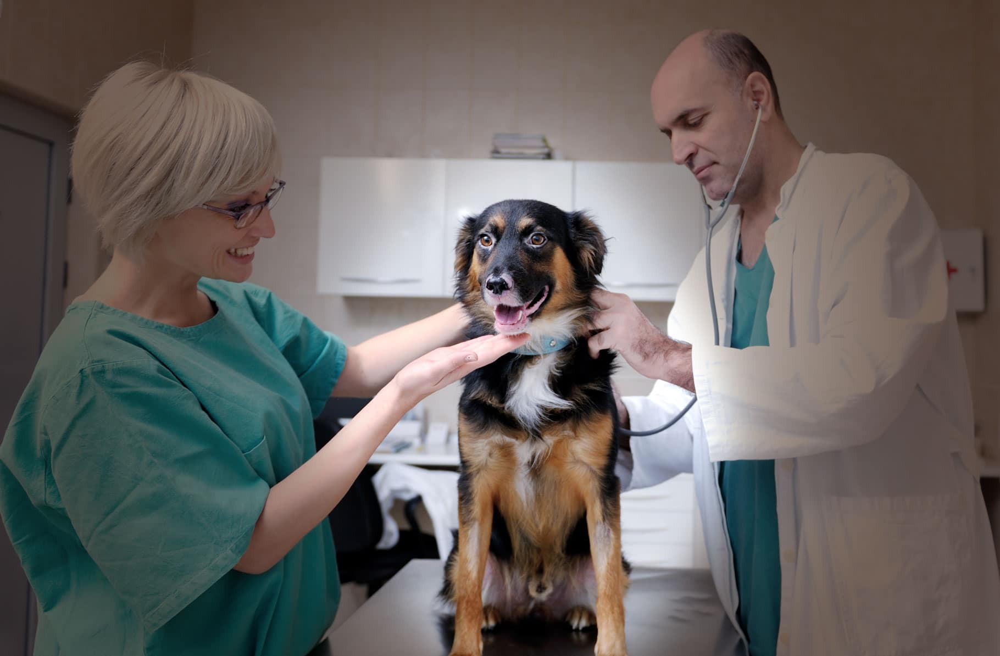

Adăpostul nostru este un loc sigur și prietenos pentru animalele care nu au avut parte de un început fericit. Aici găzduim câini și pisici de toate vârstele, fiecare cu propria poveste și propriile nevoi. Oferim fiecărui animal spații curate, hrană adecvată, îngrijire medicală și atenția de care are nevoie pentru a se recupera și a-și regăsi încrederea.
Adăpostul este dotat cu zone de joacă, spații separate pentru animale vulnerabile, precum și un cabinet veterinar unde se efectuează tratamente, vaccinări și intervenții de urgență. Ne asigurăm că fiecare animal este evaluat medical și comportamental înainte de adopție, astfel încât să ajungă în familia potrivită.
Lucrăm în strânsă colaborare cu medici veterinari, dresori, voluntari și membri ai comunității pentru a oferi fiecărui patruped cele mai bune condiții până la momentul în care își găsește căminul definitiv. Pentru noi, adăpostul nu este doar un spațiu temporar — este un loc în care animalele primesc o a doua șansă, în care sunt respectate, protejate și încurajate să își recapete bucuria de a trăi.


În fiecare zi, încercăm să construim o legătură mai puternică între comunitate și animale.
Organizăm periodic campanii de adopție, evenimente educaționale și sesiuni de socializare, prin care oamenii pot interacționa direct cu animăluțele noastre.
Credem cu tărie că informarea și implicarea publicului joacă un rol esențial în reducerea abandonului și în crearea unei societăți mai responsabile față de toate ființele. Prin aceste inițiative, ne dorim să arătăm că fiecare om poate face o diferență — fie prin adoptarea unui animal, fie prin dedicarea unei ore de voluntariat.